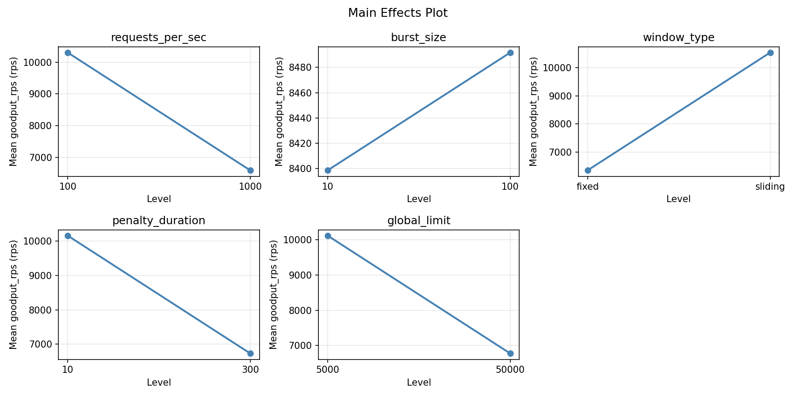
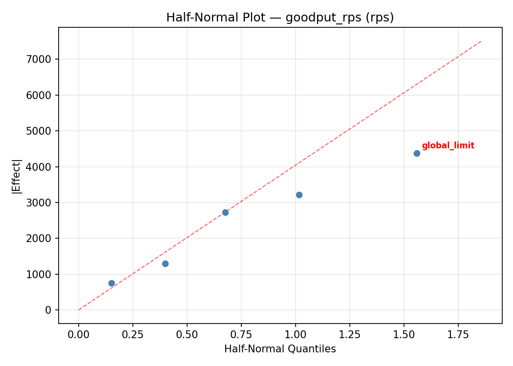
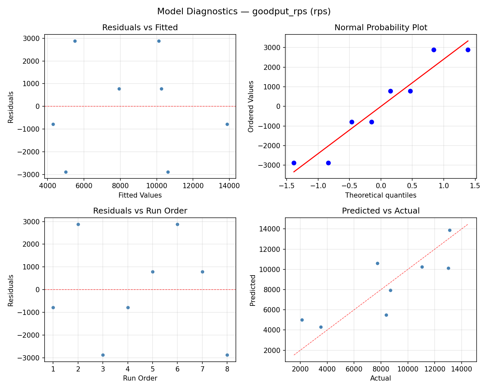
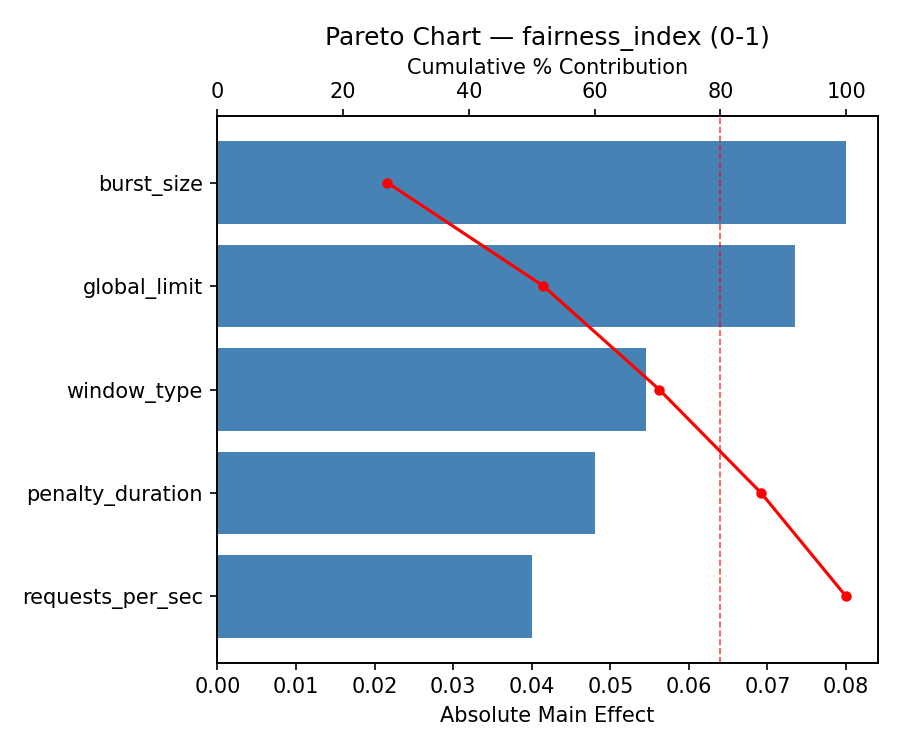
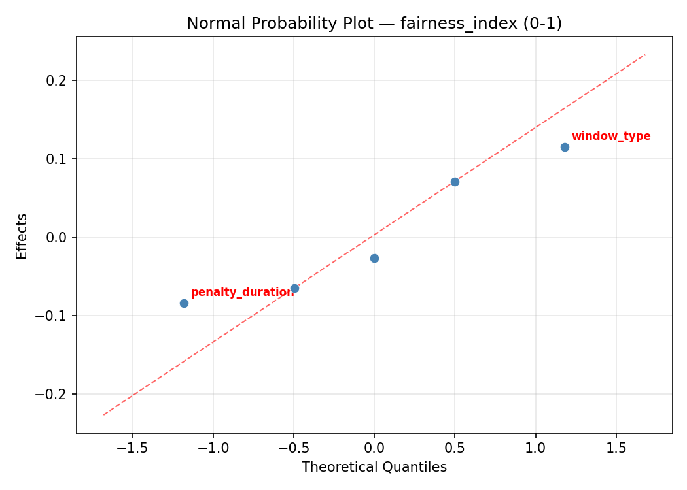
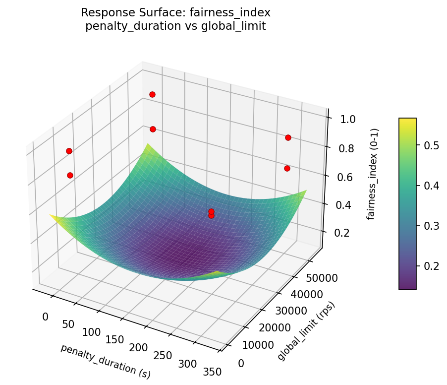
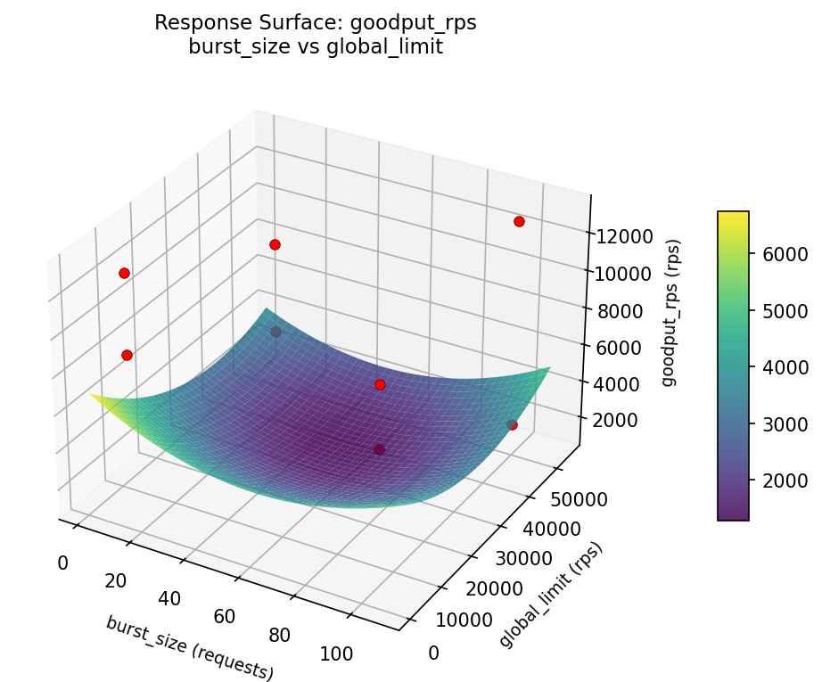
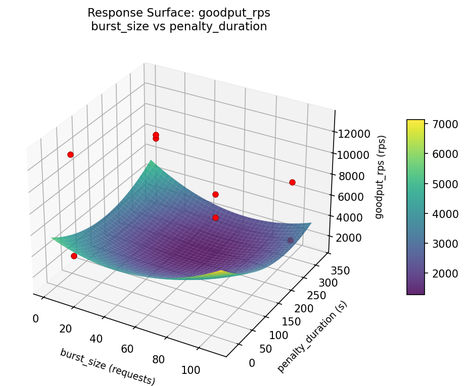
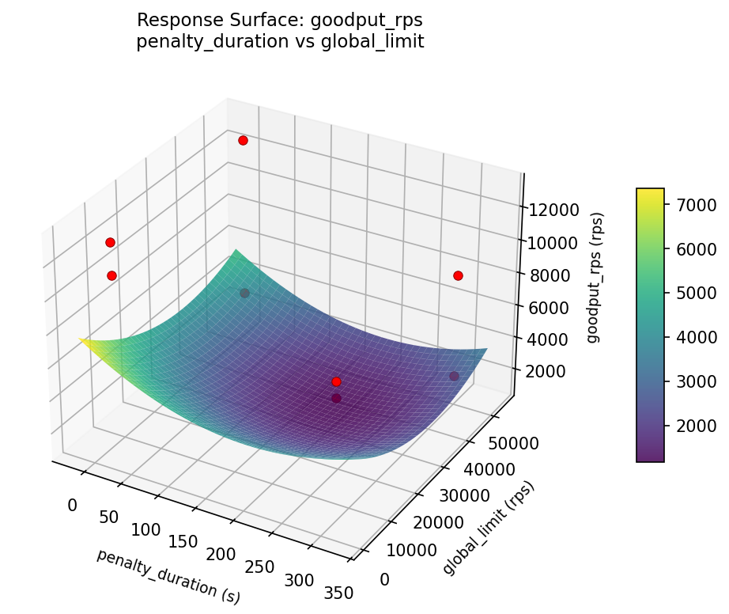
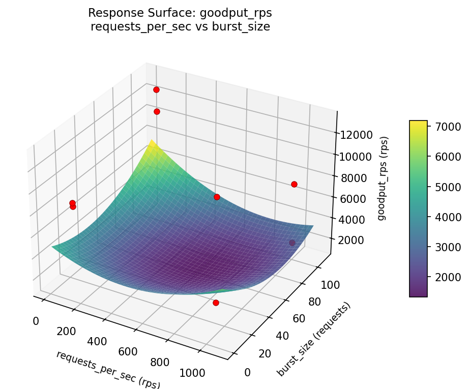

Summary
This experiment investigates api rate limiter tuning. Fractional factorial of 5 rate limiting parameters for throughput and fairness.
The design varies 5 factors: requests per sec (rps), ranging from 100 to 1000, burst size (requests), ranging from 10 to 100, window type, ranging from sliding to fixed, penalty duration (s), ranging from 10 to 300, and global limit (rps), ranging from 5000 to 50000. The goal is to optimize 2 responses: goodput rps (rps) (maximize) and fairness index (0-1) (maximize). Fixed conditions held constant across all runs include backend capacity = 20000, cache backend = redis.
A fractional factorial design reduces the number of runs from 32 to 8 by deliberately confounding higher-order interactions. This is ideal for screening — identifying which of the 5 factors matter most before investing in a full study.
Key Findings
For goodput rps, the most influential factors were burst size (37.3%), window type (24.2%), global limit (20.9%). The best observed value was 13093.0 (at requests per sec = 1000, burst size = 10, window type = fixed).
For fairness index, the most influential factors were penalty duration (35.8%), burst size (24.4%), requests per sec (21.7%). The best observed value was 0.995 (at requests per sec = 100, burst size = 100, window type = sliding).
Recommended Next Steps
- Follow up with a response surface design (CCD or Box-Behnken) on the top 3–4 factors to model curvature and find the true optimum.
- Consider whether any fixed factors should be varied in a future study.
- The screening results can guide factor reduction — drop factors contributing less than 5% and re-run with a smaller, more focused design.
Experimental Setup
Factors
| Factor | Low | High | Unit |
|---|
requests_per_sec | 100 | 1000 | rps |
burst_size | 10 | 100 | requests |
window_type | sliding | fixed | |
penalty_duration | 10 | 300 | s |
global_limit | 5000 | 50000 | rps |
Fixed: backend_capacity = 20000, cache_backend = redis
Responses
| Response | Direction | Unit |
|---|
goodput_rps | ↑ maximize | rps |
fairness_index | ↑ maximize | 0-1 |
Configuration
{
"metadata": {
"name": "API Rate Limiter Tuning",
"description": "Fractional factorial of 5 rate limiting parameters for throughput and fairness"
},
"factors": [
{
"name": "requests_per_sec",
"levels": [
"100",
"1000"
],
"type": "continuous",
"unit": "rps"
},
{
"name": "burst_size",
"levels": [
"10",
"100"
],
"type": "continuous",
"unit": "requests"
},
{
"name": "window_type",
"levels": [
"sliding",
"fixed"
],
"type": "categorical",
"unit": ""
},
{
"name": "penalty_duration",
"levels": [
"10",
"300"
],
"type": "continuous",
"unit": "s"
},
{
"name": "global_limit",
"levels": [
"5000",
"50000"
],
"type": "continuous",
"unit": "rps"
}
],
"fixed_factors": {
"backend_capacity": "20000",
"cache_backend": "redis"
},
"responses": [
{
"name": "goodput_rps",
"optimize": "maximize",
"unit": "rps"
},
{
"name": "fairness_index",
"optimize": "maximize",
"unit": "0-1"
}
],
"settings": {
"operation": "fractional_factorial",
"test_script": "use_cases/33_api_rate_limiter/sim.sh"
}
}
Experimental Matrix
The Fractional Factorial Design produces 8 runs. Each row is one experiment with specific factor settings.
| Run | requests_per_sec | burst_size | window_type | penalty_duration | global_limit |
|---|
| 1 | 100 | 100 | fixed | 10 | 5000 |
| 2 | 1000 | 10 | sliding | 10 | 5000 |
| 3 | 1000 | 100 | sliding | 300 | 5000 |
| 4 | 1000 | 100 | fixed | 300 | 50000 |
| 5 | 100 | 100 | sliding | 10 | 50000 |
| 6 | 1000 | 10 | fixed | 10 | 50000 |
| 7 | 100 | 10 | sliding | 300 | 50000 |
| 8 | 100 | 10 | fixed | 300 | 5000 |
Step-by-Step Workflow
1
Preview the design
$ doe info --config use_cases/33_api_rate_limiter/config.json
2
Generate the runner script
$ doe generate --config use_cases/33_api_rate_limiter/config.json \
--output use_cases/33_api_rate_limiter/results/run.sh --seed 42
3
Execute the experiments
$ bash use_cases/33_api_rate_limiter/results/run.sh
4
Analyze results
$ doe analyze --config use_cases/33_api_rate_limiter/config.json
5
Get optimization recommendations
$ doe optimize --config use_cases/33_api_rate_limiter/config.json
6
Multi-objective optimization
With 2 competing responses, use --multi to find the best compromise via Derringer–Suich desirability.
$ doe optimize --config use_cases/33_api_rate_limiter/config.json --multi
7
Generate the HTML report
$ doe report --config use_cases/33_api_rate_limiter/config.json \
--output use_cases/33_api_rate_limiter/results/report.html
Features Exercised
| Feature | Value |
|---|
| Design type | fractional_factorial |
| Factor types | continuous (4), categorical (1) |
| Arg style | double-dash |
| Responses | 2 (goodput_rps ↑, fairness_index ↑) |
| Total runs | 8 |
Analysis Results
Generated from actual experiment runs using the DOE Helper Tool.
Response: goodput_rps
Top factors: burst_size (37.3%), window_type (24.2%), global_limit (20.9%).
ANOVA
| Source | DF | SS | MS | F | p-value |
|---|
| Source | DF | SS | MS | F | p-value |
| requests_per_sec | 1 | 17391.1250 | 17391.1250 | 0.003 | 0.9586 |
| burst_size | 1 | 20145378.1250 | 20145378.1250 | 3.449 | 0.1224 |
| window_type | 1 | 8485140.1250 | 8485140.1250 | 1.453 | 0.2820 |
| penalty_duration | 1 | 3893445.1250 | 3893445.1250 | 0.667 | 0.4513 |
| global_limit | 1 | 6306576.1250 | 6306576.1250 | 1.080 | 0.3463 |
| requests_per_sec*burst_size | 1 | 3893445.1250 | 3893445.1250 | 0.667 | 0.4513 |
| requests_per_sec*window_type | 1 | 6306576.1250 | 6306576.1250 | 1.080 | 0.3463 |
| requests_per_sec*penalty_duration | 1 | 20145378.1250 | 20145378.1250 | 3.449 | 0.1224 |
| requests_per_sec*global_limit | 1 | 8485140.1250 | 8485140.1250 | 1.453 | 0.2820 |
| burst_size*window_type | 1 | 72619326.1250 | 72619326.1250 | 12.434 | 0.0168 |
| burst_size*penalty_duration | 1 | 17391.1250 | 17391.1250 | 0.003 | 0.9586 |
| burst_size*global_limit | 1 | 2507680.1250 | 2507680.1250 | 0.429 | 0.5412 |
| window_type*penalty_duration | 1 | 2507680.1250 | 2507680.1250 | 0.429 | 0.5412 |
| window_type*global_limit | 1 | 17391.1250 | 17391.1250 | 0.003 | 0.9586 |
| penalty_duration*global_limit | 1 | 72619326.1250 | 72619326.1250 | 12.434 | 0.0168 |
| Error | (Lenth | PSE) | 5 | 29200838.4375 | 5840167.6875 |
| Total | 7 | 113974936.8750 | 16282133.8393 | | |
Pareto Chart

Main Effects Plot

Normal Probability Plot of Effects

Half-Normal Plot of Effects

Model Diagnostics

Response: fairness_index
Top factors: penalty_duration (35.8%), burst_size (24.4%), requests_per_sec (21.7%).
ANOVA
| Source | DF | SS | MS | F | p-value |
|---|
| Source | DF | SS | MS | F | p-value |
| requests_per_sec | 1 | 0.0128 | 0.0128 | 0.667 | 0.4513 |
| burst_size | 1 | 0.0162 | 0.0162 | 0.844 | 0.4005 |
| window_type | 1 | 0.0028 | 0.0028 | 0.146 | 0.7176 |
| penalty_duration | 1 | 0.0348 | 0.0348 | 1.815 | 0.2357 |
| global_limit | 1 | 0.0017 | 0.0017 | 0.091 | 0.7755 |
| requests_per_sec*burst_size | 1 | 0.0348 | 0.0348 | 1.815 | 0.2357 |
| requests_per_sec*window_type | 1 | 0.0017 | 0.0017 | 0.091 | 0.7755 |
| requests_per_sec*penalty_duration | 1 | 0.0162 | 0.0162 | 0.844 | 0.4005 |
| requests_per_sec*global_limit | 1 | 0.0028 | 0.0028 | 0.146 | 0.7176 |
| burst_size*window_type | 1 | 0.0001 | 0.0001 | 0.004 | 0.9497 |
| burst_size*penalty_duration | 1 | 0.0128 | 0.0128 | 0.667 | 0.4513 |
| burst_size*global_limit | 1 | 0.0133 | 0.0133 | 0.692 | 0.4434 |
| window_type*penalty_duration | 1 | 0.0133 | 0.0133 | 0.692 | 0.4434 |
| window_type*global_limit | 1 | 0.0128 | 0.0128 | 0.667 | 0.4513 |
| penalty_duration*global_limit | 1 | 0.0001 | 0.0001 | 0.004 | 0.9497 |
| Error | (Lenth | PSE) | 5 | 0.0960 | 0.0192 |
| Total | 7 | 0.0818 | 0.0117 | | |
Pareto Chart

Main Effects Plot

Normal Probability Plot of Effects

Half-Normal Plot of Effects

Model Diagnostics

Response Surface Plots
3D surfaces fitted with quadratic RSM. Red dots are observed data points.
fairness index burst size vs global limit

fairness index burst size vs penalty duration

fairness index penalty duration vs global limit

fairness index requests per sec vs burst size

fairness index requests per sec vs global limit

fairness index requests per sec vs penalty duration

goodput rps burst size vs global limit

goodput rps burst size vs penalty duration

goodput rps penalty duration vs global limit

goodput rps requests per sec vs burst size

goodput rps requests per sec vs global limit

goodput rps requests per sec vs penalty duration

Multi-Objective Optimization
When responses compete, Derringer–Suich desirability finds the best compromise.
Each response is scaled to a 0–1 desirability, then combined via a weighted geometric mean.
Overall Desirability
D = 0.8732
Per-Response Desirability
| Response | Weight | Desirability | Predicted | Dir |
|---|
goodput_rps |
1.5 |
|
13361.97 0.9768 13361.97 rps |
↑ |
fairness_index |
1.0 |
|
0.92 0.7379 0.92 0-1 |
↑ |
Recommended Settings
| Factor | Value |
|---|
requests_per_sec | 975.6 rps |
burst_size | 67.08 requests |
window_type | sliding |
penalty_duration | 276.1 s |
global_limit | 4.981e+04 rps |
Source: from RSM model prediction
Trade-off Summary
Sacrifice = how much worse than single-objective best.
| Response | Predicted | Best Observed | Sacrifice |
|---|
fairness_index | 0.92 | 0.99 | +0.07 |
Top 3 Runs by Desirability
| Run | D | Factor Settings |
|---|
| #6 | 0.7192 | requests_per_sec=100, burst_size=100, window_type=sliding, penalty_duration=10, global_limit=50000 |
| #2 | 0.6051 | requests_per_sec=100, burst_size=10, window_type=sliding, penalty_duration=300, global_limit=50000 |
Model Quality
| Response | R² | Type |
|---|
fairness_index | 0.4760 | linear |
Full Multi-Objective Output
============================================================
MULTI-OBJECTIVE OPTIMIZATION
Method: Derringer-Suich Desirability Function
============================================================
Overall desirability: D = 0.8732
Response Weight Desirability Predicted Direction
---------------------------------------------------------------------
goodput_rps 1.5 0.9768 13361.97 rps ↑
fairness_index 1.0 0.7379 0.92 0-1 ↑
Recommended settings:
requests_per_sec = 975.6 rps
burst_size = 67.08 requests
window_type = sliding
penalty_duration = 276.1 s
global_limit = 4.981e+04 rps
(from RSM model prediction)
Trade-off summary:
goodput_rps: 13361.97 (best observed: 13093.00, sacrifice: -268.97)
fairness_index: 0.92 (best observed: 0.99, sacrifice: +0.07)
Model quality:
goodput_rps: R² = 0.6379 (linear)
fairness_index: R² = 0.4760 (linear)
Top 3 observed runs by overall desirability:
1. Run #5 (D=0.8484): requests_per_sec=1000, burst_size=100, window_type=fixed, penalty_duration=300, global_limit=50000
2. Run #6 (D=0.7192): requests_per_sec=100, burst_size=100, window_type=sliding, penalty_duration=10, global_limit=50000
3. Run #2 (D=0.6051): requests_per_sec=100, burst_size=10, window_type=sliding, penalty_duration=300, global_limit=50000
Full Analysis Output
=== Main Effects: goodput_rps ===
Factor Effect Std Error % Contribution
--------------------------------------------------------------
burst_size -3173.7500 1426.6277 37.3%
window_type 2059.7500 1426.6277 24.2%
global_limit -1775.7500 1426.6277 20.9%
penalty_duration 1395.2500 1426.6277 16.4%
requests_per_sec 93.2500 1426.6277 1.1%
=== ANOVA Table: goodput_rps ===
Source DF SS MS F p-value
-----------------------------------------------------------------------------
requests_per_sec 1 17391.1250 17391.1250 0.003 0.9586
burst_size 1 20145378.1250 20145378.1250 3.449 0.1224
window_type 1 8485140.1250 8485140.1250 1.453 0.2820
penalty_duration 1 3893445.1250 3893445.1250 0.667 0.4513
global_limit 1 6306576.1250 6306576.1250 1.080 0.3463
requests_per_sec*burst_size 1 3893445.1250 3893445.1250 0.667 0.4513
requests_per_sec*window_type 1 6306576.1250 6306576.1250 1.080 0.3463
requests_per_sec*penalty_duration 1 20145378.1250 20145378.1250 3.449 0.1224
requests_per_sec*global_limit 1 8485140.1250 8485140.1250 1.453 0.2820
burst_size*window_type 1 72619326.1250 72619326.1250 12.434 0.0168
burst_size*penalty_duration 1 17391.1250 17391.1250 0.003 0.9586
burst_size*global_limit 1 2507680.1250 2507680.1250 0.429 0.5412
window_type*penalty_duration 1 2507680.1250 2507680.1250 0.429 0.5412
window_type*global_limit 1 17391.1250 17391.1250 0.003 0.9586
penalty_duration*global_limit 1 72619326.1250 72619326.1250 12.434 0.0168
Error (Lenth PSE) 5 29200838.4375 5840167.6875
Total 7 113974936.8750 16282133.8393
Note: Error estimated using Lenth's pseudo-standard-error (unreplicated design)
=== Interaction Effects: goodput_rps ===
Factor A Factor B Interaction % Contribution
------------------------------------------------------------------------
burst_size window_type 6025.7500 26.3%
penalty_duration global_limit -6025.7500 26.3%
requests_per_sec penalty_duration -3173.7500 13.9%
requests_per_sec global_limit -2059.7500 9.0%
requests_per_sec window_type 1775.7500 7.8%
requests_per_sec burst_size 1395.2500 6.1%
burst_size global_limit -1119.7500 4.9%
window_type penalty_duration 1119.7500 4.9%
burst_size penalty_duration 93.2500 0.4%
window_type global_limit -93.2500 0.4%
=== Summary Statistics: goodput_rps ===
requests_per_sec:
Level N Mean Std Min Max
------------------------------------------------------------
100 4 8398.5000 3874.0699 3519.0000 12994.0000
1000 4 8491.7500 4793.4780 2112.0000 13093.0000
burst_size:
Level N Mean Std Min Max
------------------------------------------------------------
10 4 10032.0000 2439.5830 7726.0000 12994.0000
100 4 6858.2500 5032.3905 2112.0000 13093.0000
window_type:
Level N Mean Std Min Max
------------------------------------------------------------
fixed 4 7415.2500 5401.7746 2112.0000 12994.0000
sliding 4 9475.0000 2446.2413 7726.0000 13093.0000
penalty_duration:
Level N Mean Std Min Max
------------------------------------------------------------
10 4 7747.5000 3142.1537 3519.0000 11036.0000
300 4 9142.7500 5178.8706 2112.0000 13093.0000
global_limit:
Level N Mean Std Min Max
------------------------------------------------------------
5000 4 9333.0000 4616.1155 3519.0000 13093.0000
50000 4 7557.2500 3818.4986 2112.0000 11036.0000
=== Main Effects: fairness_index ===
Factor Effect Std Error % Contribution
--------------------------------------------------------------
penalty_duration -0.1320 0.0382 35.8%
burst_size -0.0900 0.0382 24.4%
requests_per_sec -0.0800 0.0382 21.7%
window_type -0.0375 0.0382 10.2%
global_limit 0.0295 0.0382 8.0%
=== ANOVA Table: fairness_index ===
Source DF SS MS F p-value
-----------------------------------------------------------------------------
requests_per_sec 1 0.0128 0.0128 0.667 0.4513
burst_size 1 0.0162 0.0162 0.844 0.4005
window_type 1 0.0028 0.0028 0.146 0.7176
penalty_duration 1 0.0348 0.0348 1.815 0.2357
global_limit 1 0.0017 0.0017 0.091 0.7755
requests_per_sec*burst_size 1 0.0348 0.0348 1.815 0.2357
requests_per_sec*window_type 1 0.0017 0.0017 0.091 0.7755
requests_per_sec*penalty_duration 1 0.0162 0.0162 0.844 0.4005
requests_per_sec*global_limit 1 0.0028 0.0028 0.146 0.7176
burst_size*window_type 1 0.0001 0.0001 0.004 0.9497
burst_size*penalty_duration 1 0.0128 0.0128 0.667 0.4513
burst_size*global_limit 1 0.0133 0.0133 0.692 0.4434
window_type*penalty_duration 1 0.0133 0.0133 0.692 0.4434
window_type*global_limit 1 0.0128 0.0128 0.667 0.4513
penalty_duration*global_limit 1 0.0001 0.0001 0.004 0.9497
Error (Lenth PSE) 5 0.0960 0.0192
Total 7 0.0818 0.0117
Note: Error estimated using Lenth's pseudo-standard-error (unreplicated design)
=== Interaction Effects: fairness_index ===
Factor A Factor B Interaction % Contribution
------------------------------------------------------------------------
requests_per_sec burst_size -0.1320 21.1%
requests_per_sec penalty_duration -0.0900 14.4%
burst_size global_limit -0.0815 13.0%
window_type penalty_duration 0.0815 13.0%
burst_size penalty_duration -0.0800 12.8%
window_type global_limit 0.0800 12.8%
requests_per_sec global_limit 0.0375 6.0%
requests_per_sec window_type -0.0295 4.7%
burst_size window_type 0.0065 1.0%
penalty_duration global_limit -0.0065 1.0%
=== Summary Statistics: fairness_index ===
requests_per_sec:
Level N Mean Std Min Max
------------------------------------------------------------
100 4 0.8865 0.0498 0.8320 0.9490
1000 4 0.8065 0.1432 0.6850 0.9950
burst_size:
Level N Mean Std Min Max
------------------------------------------------------------
10 4 0.8915 0.0752 0.8320 0.9950
100 4 0.8015 0.1273 0.6850 0.9490
window_type:
Level N Mean Std Min Max
------------------------------------------------------------
fixed 4 0.8652 0.1384 0.6850 0.9950
sliding 4 0.8277 0.0847 0.7060 0.8990
penalty_duration:
Level N Mean Std Min Max
------------------------------------------------------------
10 4 0.9125 0.0720 0.8400 0.9950
300 4 0.7805 0.1022 0.6850 0.8990
global_limit:
Level N Mean Std Min Max
------------------------------------------------------------
5000 4 0.8317 0.0994 0.7060 0.9490
50000 4 0.8613 0.1296 0.6850 0.9950
Optimization Recommendations
=== Optimization: goodput_rps ===
Direction: maximize
Best observed run: #4
requests_per_sec = 1000
burst_size = 10
window_type = fixed
penalty_duration = 10
global_limit = 50000
Value: 13093.0
RSM Model (linear, R² = 0.7980, Adj R² = 0.2929):
Coefficients:
intercept +8445.1250
requests_per_sec +536.1250
burst_size -2346.8750
window_type +183.3750
penalty_duration -1715.3750
global_limit +1611.6250
Predicted optimum (from linear model, at observed points):
requests_per_sec = 1000
burst_size = 10
window_type = fixed
penalty_duration = 10
global_limit = 50000
Predicted value: 14471.7500
Surface optimum (via L-BFGS-B, linear model):
requests_per_sec = 1000
burst_size = 10
window_type = fixed
penalty_duration = 10
global_limit = 50000
Predicted value: 14838.5000
Model quality: Good fit — general trends are captured, some noise remains.
Factor importance:
1. burst_size (effect: -4693.8, contribution: 36.7%)
2. penalty_duration (effect: -3430.8, contribution: 26.8%)
3. global_limit (effect: 3223.2, contribution: 25.2%)
4. requests_per_sec (effect: 1072.2, contribution: 8.4%)
5. window_type (effect: 366.8, contribution: 2.9%)
=== Optimization: fairness_index ===
Direction: maximize
Best observed run: #5
requests_per_sec = 100
burst_size = 100
window_type = sliding
penalty_duration = 10
global_limit = 50000
Value: 0.995
RSM Model (linear, R² = 0.7581, Adj R² = 0.1532):
Coefficients:
intercept +0.8465
requests_per_sec -0.0808
burst_size +0.0207
window_type +0.0063
penalty_duration -0.0240
global_limit +0.0135
Predicted optimum (from linear model, at observed points):
requests_per_sec = 100
burst_size = 100
window_type = sliding
penalty_duration = 10
global_limit = 50000
Predicted value: 0.9917
Surface optimum (via L-BFGS-B, linear model):
requests_per_sec = 100
burst_size = 100
window_type = fixed
penalty_duration = 10
global_limit = 50000
Predicted value: 0.9917
Model quality: Good fit — general trends are captured, some noise remains.
Factor importance:
1. requests_per_sec (effect: -0.2, contribution: 55.6%)
2. penalty_duration (effect: -0.0, contribution: 16.5%)
3. burst_size (effect: 0.0, contribution: 14.3%)
4. global_limit (effect: 0.0, contribution: 9.3%)
5. window_type (effect: 0.0, contribution: 4.3%)